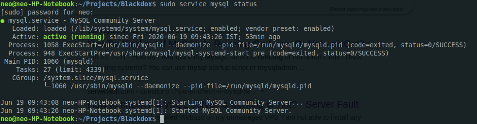

Open the terminal and run
sudo apt install mysql-server
It will install MySQL server on your machine. Now before you start using it, you need to configure few things. Type
sudo mysql_secure_installation
It will walk you through some step to configure your server. Like setting password for the root user, removing test database etc.
To connect to the server and run mysql command:
sudo mysql
Now you can run any mysql script or statement.
It will login you as root user. Note that as you are using terminal you won't be asked to password for root user to get into the server. But if you do that from any external program, you will be asked to provide the password.
If you want to login to your MySQL server as root from an external program such as phpMyAdmin you need to configure the MySQL first.
Change the authentication method from auth_socket to mysql_native_password. You can do that by running the following command:
ALTER USER 'root'@'localhost' IDENTIFIED WITH mysql_native_password BY 'very_strong_password'; FLUSH PRIVILEGES;
Now you can connect to the MySQL database using hostname, port, databasename, username and password. As you have changed the authentication method the command sudo mysql won't work anymore. You must need to provide user and password. Type the following command:
mysql -u root -p
This will prompt you for password. Provide password and you will be able to get into the server. Here root is the name of the user, if you want to use different username replace root with other username.
Sometimes you want to know if MySQL server is running in the background or not. To check run
sudo service mysql status
If it is running, it will give you output like the following
